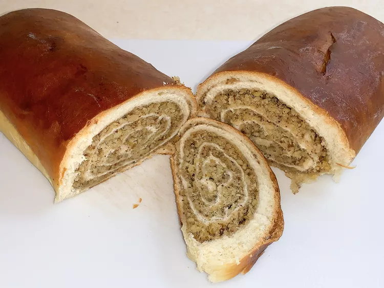

About
Potica is a traditional Slovenian dessert pastry that is typically filled with a sweet nut mixture. It is rolled into a spiral shape, resulting in a delightful treat that is enjoyed by many. The combination of the soft, yeasted dough and the flavorful filling makes Potica a beloved delicacy. Here, we present you with a classic Potica recipe that you can try in your own kitchen.
Ingredients
- 2 cups all-purpose flour
- 1/4 cup granulated sugar
- 1/2 teaspoon salt
- 1/2 cup unsalted butter, cold
- 1/2 cup milk
- 1/2 cup chopped walnuts
- 1/2 cup raisins
- 1/2 cup brown sugar
- 1 teaspoon ground cinnamon
Instructions
- In a large mixing bowl, combine flour, sugar, and salt. Cut in the butter until the mixture resembles coarse crumbs.
- Add milk gradually, mixing until the dough comes together. Knead the dough on a floured surface until smooth and elastic.
- Roll out the dough into a rectangle shape. Spread the chopped walnuts, raisins, brown sugar, and ground cinnamon evenly over the dough.
- Starting from one of the shorter ends, roll up the dough tightly. Place the rolled dough in a greased loaf pan.
- Bake at 350°F (175°C) for 40-45 minutes, or until golden brown. Let it cool before slicing and serving.
Tips
- Make sure the butter is cold to achieve a flaky texture in the dough.
- You can substitute walnuts with other nuts such as pecans or almonds for a variation in flavor.
- For a sweeter Potica, you can drizzle a glaze made of powdered sugar and milk on top after it has cooled.
Variations
Here are a few variations you can try:
- Poppy Seed Potica: Replace the chopped walnuts with poppy seed filling for a different taste.
- Chocolate Potica: Add chocolate chips or cocoa powder to the filling for a chocolatey twist.
- Fruit-filled Potica: Instead of nuts, use a fruit preserve or jam as the filling for a fruity Potica.
Convert Kilograms to Pounds (lbs)
To use our converter, all you need to do is enter the weight in kilograms that you'd like to convert. Our program will instantly perform the conversion using the conversion factor of 1 kilogram equals approximately 2.20462 pounds. The converted weight will be displayed in pounds, allowing you to easily compare and work with imperial weight measurements.
Convert Celcius to Fahrenheit
Using our converter is incredibly straightforward. Simply enter the temperature in Celsius that you'd like to convert, and our program will swiftly calculate the equivalent temperature in Fahrenheit.
Choose the next dish to cook - from all over the world!
Our program allows users to discover and explore various national dishes from around the world. With a vast collection of 100 different national dishes, the program randomly selects and displays a dish. We'd be happy to provide the pecipe of it, as well.
Support our work here:
You are able to donate to us some money, in order to support our cooking website!